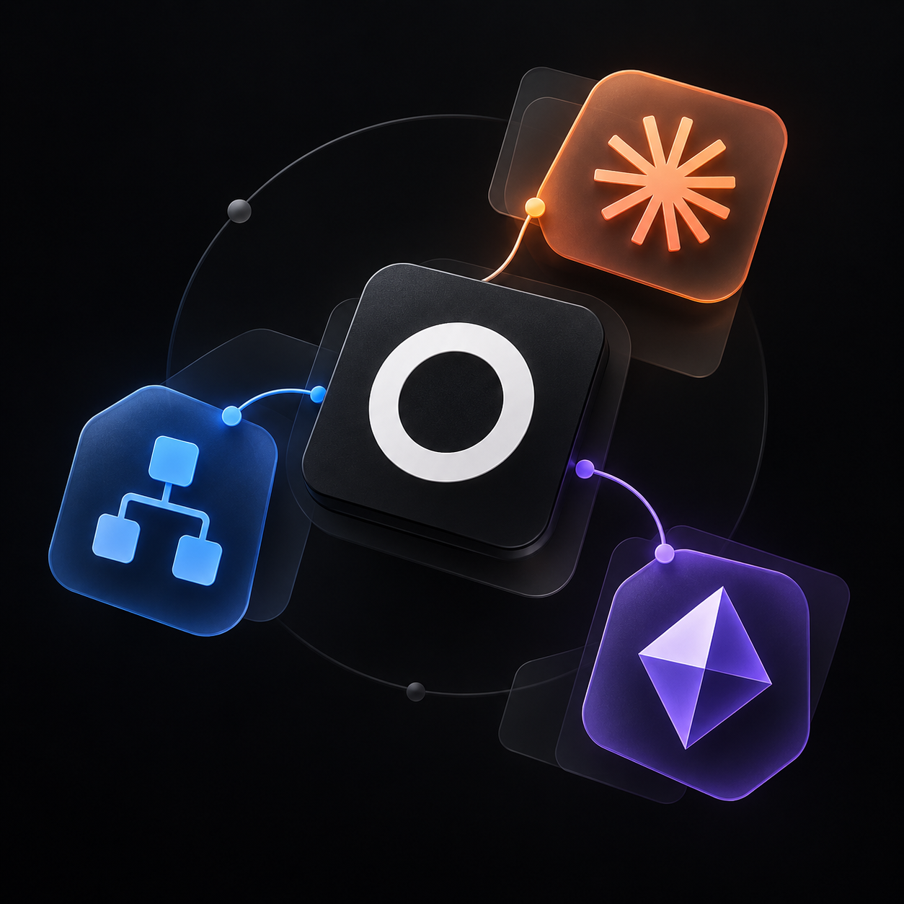

Il punto di attrito.
Osservare come si lavora già, quali passaggi si ripetono e dove si perde tempo o chiarezza.
Una pratica indipendente, aperta a nuovi incontri
Informatica, filosofia e intelligenza artificiale applicata. Un percorso atipico per dare forma a soluzioni che partono dalle persone, dal loro lavoro e dalle loro curiosità.
Progetti selezionati
Un saggio, applicazioni e strumenti operativi. Ogni progetto racconta un’esigenza diversa e il ragionamento che l’ha trasformata in una soluzione.
Un piccolo saggio che diventa contesto per gli agenti. La prospettiva prima delle istruzioni.
Leggi il caso e scarica il saggio PDF · 52 paginePercorsi culturali che cambiano prospettiva, tra fonti, gioco e approfondimenti interattivi.
Esplora il progetto Applicazione divulgativaDa una lista di clienti a una settimana organizzata. Percorsi pensati per il camion che li percorrerà.
Dal problema alla soluzione Applicazione operativa
Un agente dentroAccesso diretto al programma e skill su misura per il modo di lavorare di un professionista.
Scopri l’integrazione Ambiente personalizzatoLo smartphone diventa una bacchetta per Hogwarts Legacy: movimento, calibrazione e comandi di gioco.
Dentro l’esperimento Progetto indipendenteUna lettura condivisa dell’azienda, dal singolo settore alle riunioni e alla pianificazione strategica.
Esplora il caso aziendale Soluzione proprietariaLa persona dietro i progetti
Gabriele Corso.
La curiosità di capire.
La voglia di costruire.
Una formazione tecnica in informatica ed economia, una laurea triennale in Filosofia e un Master in AI Development attualmente in corso. Il ritorno alla tecnica porta con sé le domande del percorso umanistico: a chi serve uno strumento, quale abitudine può migliorare, quali scelte lascia alle persone?
Da due anni, la pratica quotidiana dell’intelligenza artificiale accompagna lo sviluppo di soluzioni personali e professionali. Codex e Claude Code, server MCP, plugin, connettori ed estensioni fanno parte del lavoro: collegare strumenti, dare contesto agli agenti, provare alternative e verificare i risultati.
Gli interessi attraversano cultura, giochi, creatività e organizzazione del lavoro. Da qui nascono progetti molto diversi, uniti dall’attenzione alle esigenze specifiche di chi li usa. Anche quelle di un singolo lavoratore, quando una soluzione aziendale ancora non c’è.
Osservare come si lavora già, quali passaggi si ripetono e dove si perde tempo o chiarezza.
Combinare software, dati e agenti intorno al contesto della persona e ai vincoli del progetto.
Costruire, confrontare il risultato con il bisogno iniziale e correggere ciò che non funziona.
Il Master in AI Development è in corso. I progetti qui sotto mostrano il percorso tecnico attraverso problemi circoscritti, soluzioni verificabili e competenze trasferibili: dalla preparazione dei dati alla pubblicazione di un servizio, fino alla lettura operativa dei risultati.
$unwind, $subtract, $divide e $group, oltre a controlli sui dati.H-AI esplora il rapporto tra azione umana, tecnologia e responsabilità. Da oltre un anno, il testo accompagna anche il lavoro con gli agenti: un contesto sociale e filosofico per orientare le risposte.
Un invito a conoscere il pensiero da cui nascono i progetti.
Nuove idee, nuove collaborazioni
Collaborazioni con professionisti, piccole imprese e persone con un’esigenza concreta. Anche un’idea ancora da mettere a fuoco è un buon punto di partenza.
Il modulo è facoltativo. Puoi scrivere direttamente oppure preparare un breve messaggio.